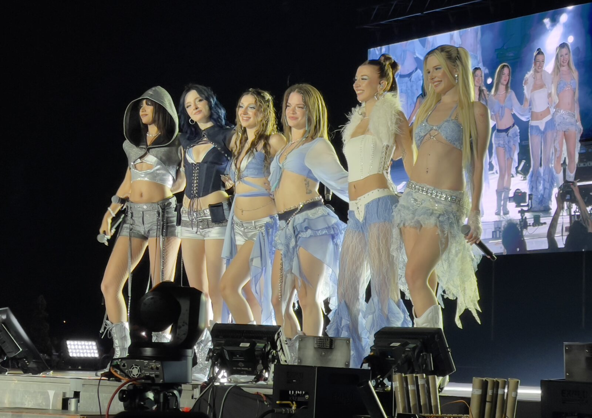
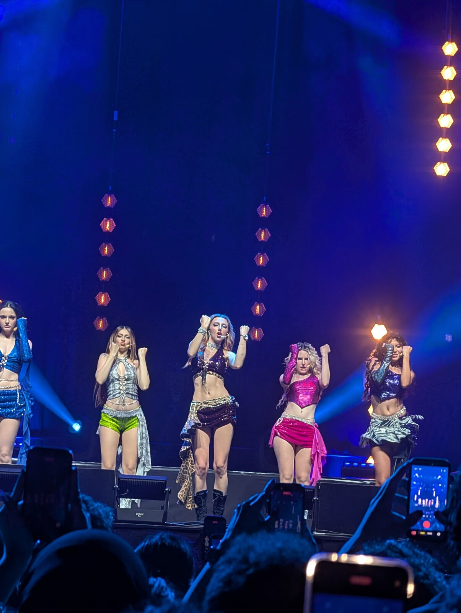
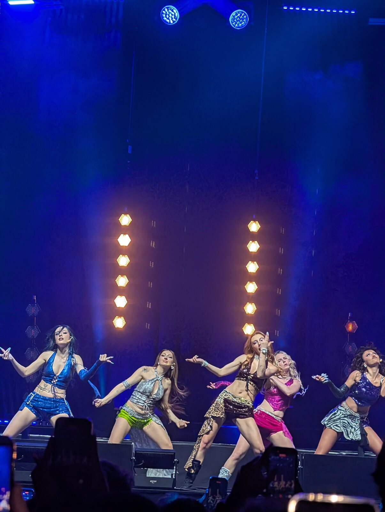
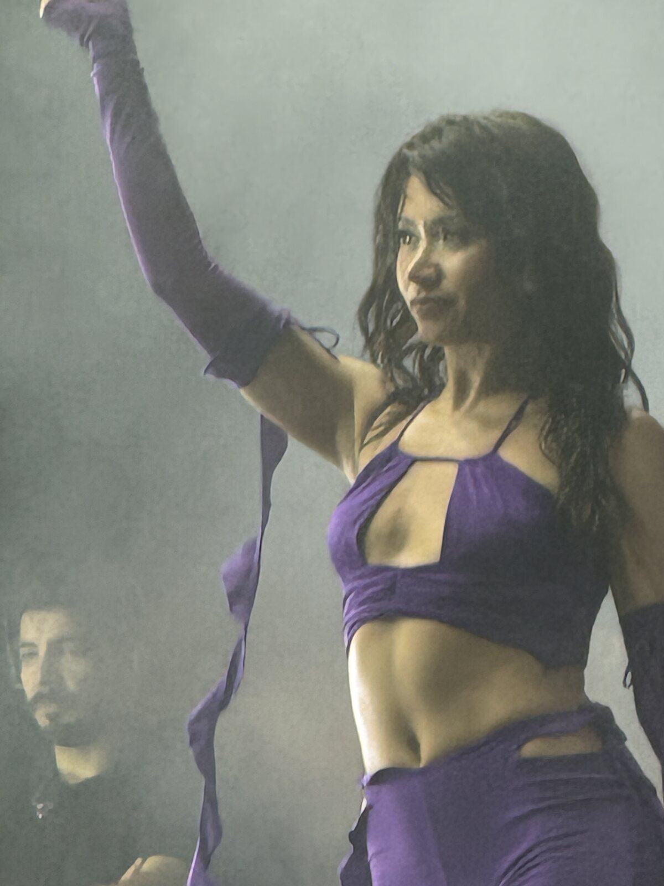
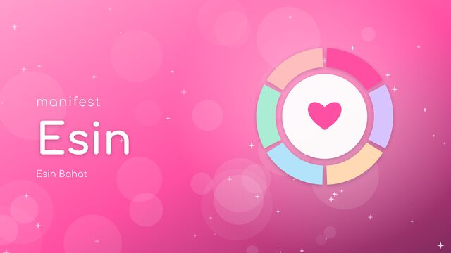
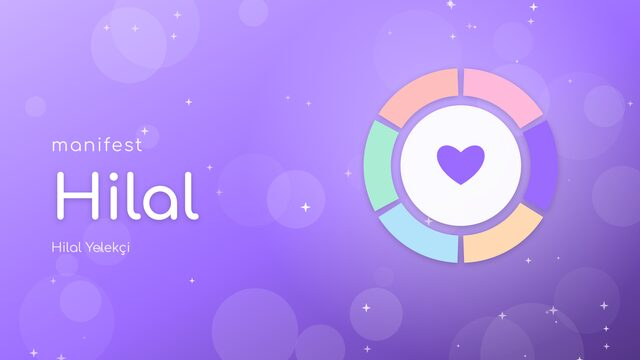
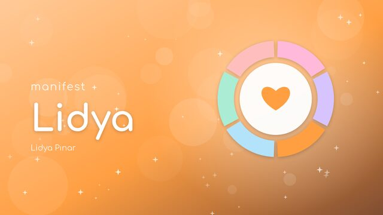
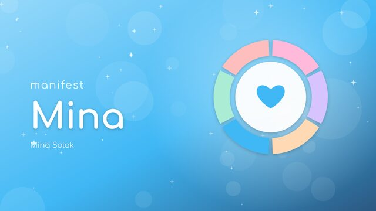
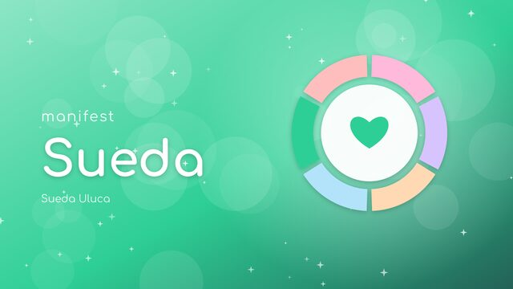
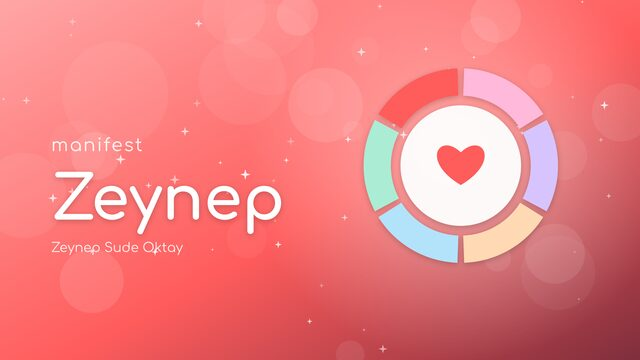

What's inside
Debian 13 underneath, a pastel KDE Plasma desktop on top, and a few things only fans get.
Bias picker
Choose your favorite member on first login. Wallpaper, accent color and theme switch to match her.
Manifest Hub
Member profiles, the latest videos from the official channel, the discography and every link in one app.
Birthday surprises
On a member's birthday you get a notification and a confetti wallpaper made just for her.
Countdown widget
A desktop widget counts down to the next birthday, anniversary or concert you add.
Feels familiar
A centered taskbar and start menu, so anyone coming from Windows feels at home right away.
Little extras
Themed boot screen, login screen, installer slides, a fan art lock screen and a manifest terminal command.
On stage
manifest live in concert, shot by fans.








Meet the girls
Six members, six colors. Every one of them gets her own wallpaper and a confetti wallpaper on her birthday.






Watch manifest
The latest videos from the official manifest channel, always up to date.
Install it
You need a USB stick of at least 4 GB and a 64-bit PC.
- Download the latest ISO from the releases page.
- Write it to the USB stick with balenaEtcher, Rufus (DD mode) or Ventoy.
- Turn off Secure Boot in your BIOS settings, then boot from the USB stick.
- Pick Turkish or English in the boot menu and try everything live without installing.
- When you are ready, double-click Install ManifestOS on the desktop.